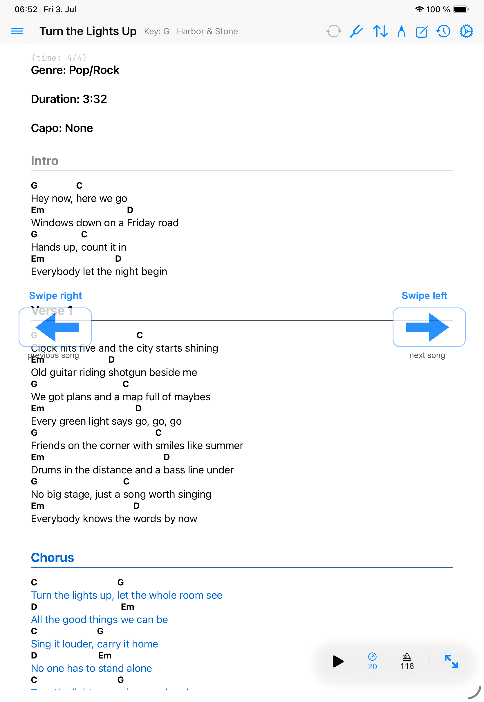

Gestures
Swiping
Swipe gestures help you move through songs quickly and reveal actions without opening extra menus.

Swipe between songs
- Swipe left on the song viewer to move forward to the next available song.
- Swipe right on the song viewer to move back to the previous available song.
- On multi-page ChordPro or PDF songs, page turns happen inside the current song before moving to another song.
- Annotation mode disables performance swipes so drawing and highlighting do not accidentally change songs.
Swipe song rows
In the song library, row swipes reveal management actions for that song. Swipe from the leading edge for actions such as Link, Favorite, and Copy to Library. Swipe from the trailing edge when you intend to delete a song.
When swipes do nothing
- If no previous or next song is available, Songivo stays on the current song.
- If annotation mode is active, tap Done before using song navigation swipes.
- If the song list is open, swipe the row rather than the main chart area when you want row actions.